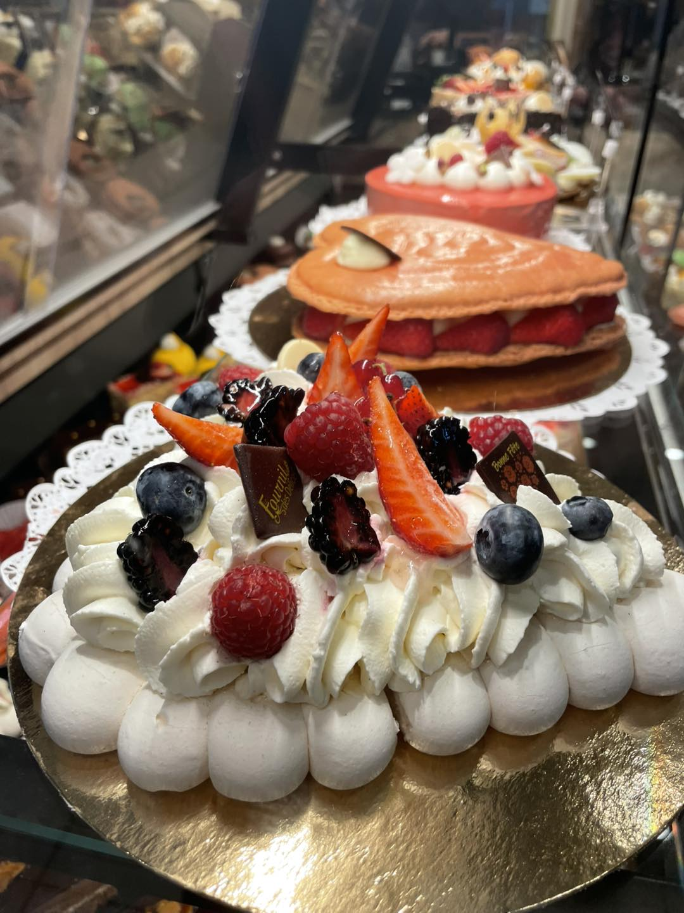
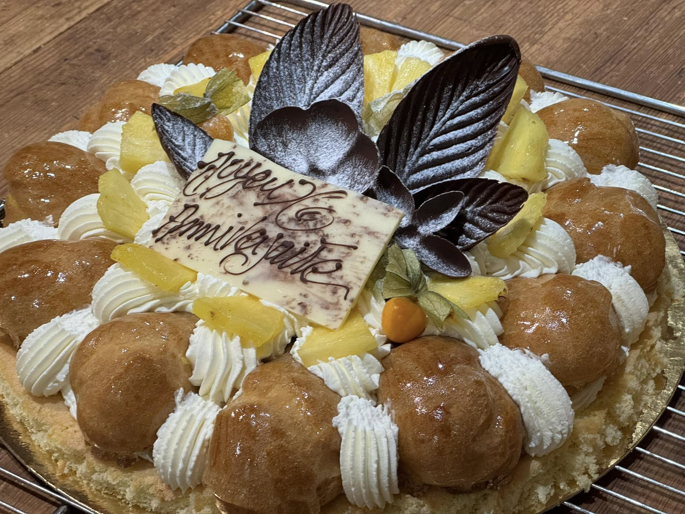
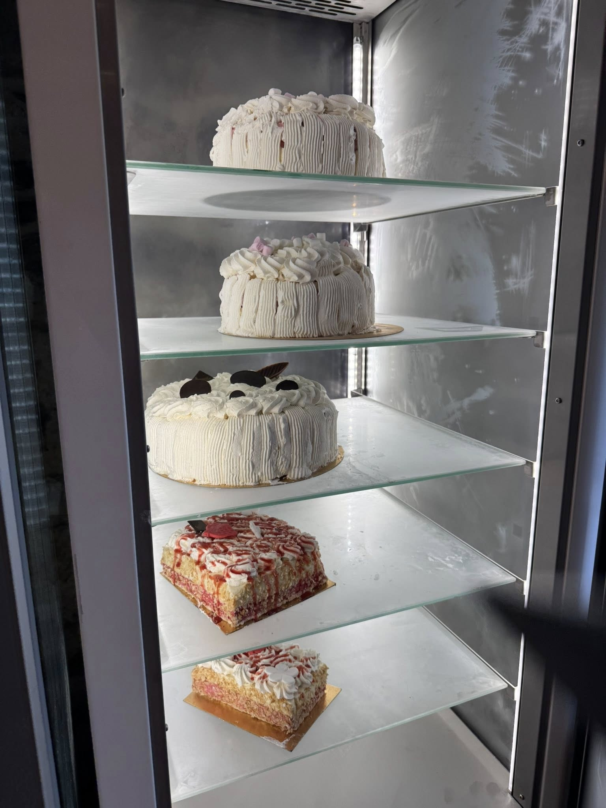

Valoriser sans surpromettre.
Les patisseries attirent vite l'oeil, mais la page doit rester simple et ne pas ressembler a une marque de luxe deconnectee du village.
La collection la plus visuelle du site : vitrines, gateaux et commandes plus festives mises en scene comme un cas editorial.



Les patisseries attirent vite l'oeil, mais la page doit rester simple et ne pas ressembler a une marque de luxe deconnectee du village.
Le format case study donne de la presence aux images et conserve une lecture tres simple avec peu de texte.
Les desserts prennent un vrai statut dans le site et laissent mieux imaginer la commande, le week-end ou l'evenement.